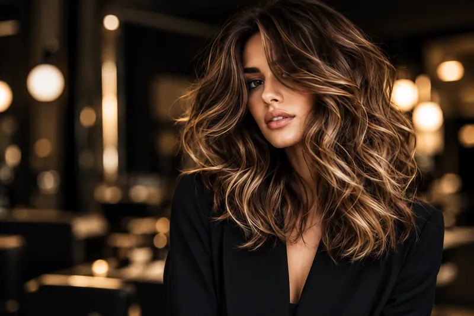
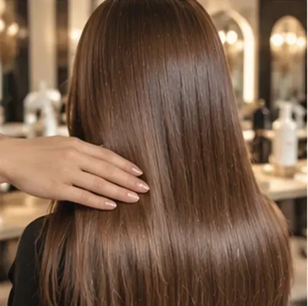
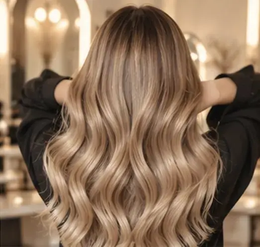
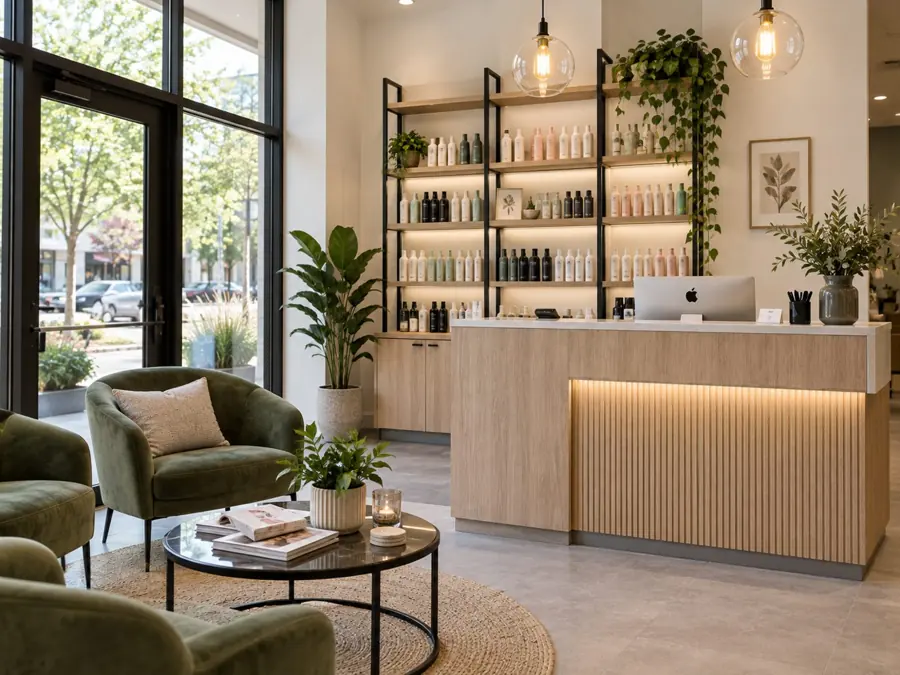

Основательница студии
Евгения
Кератин, ботокс и холодное восстановление.
Записаться в Instagram ↗Кератин, ботокс, восстановление волос, окрашивание и укладки. Индивидуальный подбор процедуры и домашнего ухода.
−10% на первое посещение · условия при записи




Цены из предоставленного прайса Instagram. Актуальную стоимость и условия скидок уточняйте при записи.
| Длина волос | Виктория / Алёна | Евгения |
|---|---|---|
| До 30 см | 200 BYN | 210 BYN |
| До 35 см | 220 BYN | 230 BYN |
| До 40 см | 230 BYN | 240 BYN |
| До 45 см | 240 BYN | 250 BYN |
| До 50 см | 250 BYN | 270 BYN |
| До 55 см | 270 BYN | 290 BYN |
| До 60 см | 290 BYN | 320 BYN |
| До 65 см | 320 BYN | 350 BYN |
| До 70 см | 350 BYN | 380 BYN |
| До 75 см | 360 BYN | 400 BYN |
| До 80 см | 390 BYN | 440 BYN |
Продолжительность — от 3 часов. Доплаты указаны ниже.
| Длина волос | Виктория / Алёна | Евгения |
|---|---|---|
| До 30 см | 190 BYN | 200 BYN |
| До 35 см | 210 BYN | 220 BYN |
| До 40 см | 220 BYN | 230 BYN |
| До 45 см | 230 BYN | 240 BYN |
| До 50 см | 240 BYN | 260 BYN |
| До 55 см | 260 BYN | 280 BYN |
| До 60 см | 280 BYN | 300 BYN |
| До 65 см | 310 BYN | 330 BYN |
| До 70 см | 330 BYN | 350 BYN |
| До 75 см | 350 BYN | 380 BYN |
| До 80 см | 380 BYN | 430 BYN |
Продолжительность — от 3 часов. Доплаты указаны ниже.
У всех мастеров стоимость одинаковая. От 2 часов.
В отдельный день возможна доплата за густоту до 30 BYN.
Выполняет топ-мастер Алёна.
Выполняет топ-мастер Виктория.
Длину измеряют от макушки до самой длинной части волос; густоту — по окружности хвоста у корня. Итоговую стоимость уточняйте у мастера до процедуры.
Основательница студии
Кератин, ботокс и холодное восстановление.
Записаться в Instagram ↗Топ-мастер
Уход за волосами, причёски и укладки.
Записаться в Instagram ↗Топ-мастер
Уход за волосами, окрашивание и тонирование.
Записаться в Instagram ↗Результаты кератина, ботокса, восстановления и окрашивания смотрите в профиле студии.
Смотреть работы Volos Studio ↗Фотографии в оформлении этого демо — временные примеры. Они не представлены как работы студии.
Подбор процедуры и домашнего ухода под ваш тип волос и кожи головы.
В материалах студии указана бесплатная диагностика перед процедурой по желанию клиента.
В профиле указана скидка 10% на первое посещение. Условия уточняйте у администратора.
Минск, ул. Щорса, 3
Ежедневно 10:00–22:00 · по предварительной записи
Напишите, какая процедура вас интересует, укажите длину волос и удобный день. Мастер поможет уточнить стоимость и согласовать время.
Volos Studio — студия ухода за волосами Евгении Русак. Кератин, ботокс, холодное восстановление, окрашивание и причёски — на Щорса, 3 в Минске.
Подбор процедуры и домашнего ухода под ваш тип волос и кожи головы.
В материалах студии указана бесплатная диагностика перед процедурой по желанию клиента.
В профиле указана скидка 10% на первое посещение. Условия уточняйте у администратора.
От процедуры, мастера, длины и густоты волос. Возможны доплаты за сложность. Точную сумму согласуйте до процедуры.
Напишите мастеру о вашем запросе и состоянии волос. В студии подберут процедуру и домашний уход.
В профиле студии указана скидка 10%. Актуальность и условия уточняйте при записи.
Минск, ул. Щорса, 3
Ежедневно 10:00–22:00 · по предварительной записи
Напишите, какая процедура вас интересует, укажите длину волос и удобный день. Мастер поможет уточнить стоимость и согласовать время.